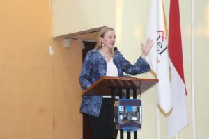
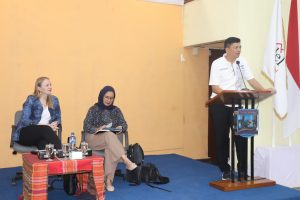
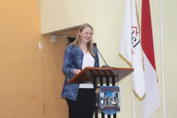
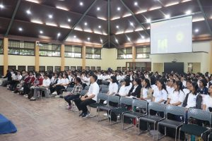
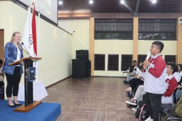
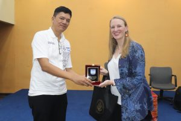

Kuliah Umum oleh Konsulat Amerika Serikat terkait Suku Asli Amerika Serikat
November 27 2023

Pada hari Jumat, 24 November 2023 Institut Teknologi Del menerima kunjungan dari Ibu Kristy Mordhorts (Konsulat Amerika Serikat di Medan). Kunjungan ini disambut baik oleh IT Del yang diwakili oleh Bapak Dr. Johannes Harungguan Sianipar, S.T., M.T. (Wakil Rektor I Bidang Akademik dan Kemahasiswaan). “Kami sangat senang atas kehadiran Ibu disini untuk sharing kepada mahasiswa kami, dengan partisipasi mahasiswa juga kami berharap kegiatan ini berjalan dengan baik”. Ujar Beliau.br>
Kurikulum pendidikan tinggi adalah seperangkat rencana dan pengaturan mengenai isi maupun bahan kajian dan pelajaran serta cara penyampaian dan penilaiannya yang digunakan sebagai pedoman penyelenggaraan kegiatan belajar – mengajar di perguruan tinggi.


Pada kesempatan ini Ibu Kristy juga sebagai narasumber Kuliah Umum kepada Mahasiswa IT Del dengan topik “Native Americans in the United States” (Suku Asli Amerika Serikat). Beliau memperkenalkan bagaimana tradisi, perjuangan hingga aturan-aturan suku asli Amerika Serikat karena Beliau merupakan Suku Asli Amerika Serikat. Kuliah umum ditutup dengan sesi diskusi yang disambut aktif oleh mahasiswa IT Del.



